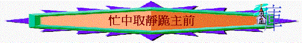

[ 聚會資源 ]
一.
唱詩--如鹿渴慕
如鹿渴慕清涼的溪水，我的心也真渴慕您，
惟有您是我心 所敬愛我渴望 來敬拜您。
惟您是我力量盾牌，我心靈只有向您下拜，
惟有您是我心 所敬愛我渴望 來敬拜您。
二.在神的話語裡與神相交
1.個人讀經(詩27或自己平時讀經的經文)
2.經中默想與祈禱
A.「耶和華是我的亮光，是我的拯救，我還怕誰呢？耶和華是我性命的保障，我還懼誰呢？」詩27:1
～今日我有甚麼懼怕/煩擾/犯罪引起的不安的事情？
可向神傾吐……
B.「有一件事，我曾求耶和華，我仍要尋求：就是一生一世住在耶和華的殿中，瞻仰他的榮美，在他的殿裡求問。」詩27:4
～若一生我要尋求一件事情，我會尋求甚麼事？
可向神尋求……
C.「我若不信在活人之地得見耶和華的恩惠，就早已喪膽了。」詩27:13
～我最近對神的信心如何？看不看到近來神所賜的恩惠？
可向祂求信心/讚美祂的恩惠……
二. 唱詩—您民是我民
請開我的眼，明瞭您異象，望見莊稼熟透，收莊稼的太少，
人間太多失喪靈魂，等待救恩，
誰說父神不關心過問，只等收莊稼者。
請燒我心頭，如同祢心境，望見山不見牧者，只得迷羊，
神家歷久荒廢牧場，等待復興，
誰說父神不關心過問，只等牧羊人
願說您的國是我的國，我願一生跟您，
您民是我民，與您渡何方，請祢指引。
四.在祈禱裡尋求事奉方向
1.神的異象
～我看到人的靈魂需要嗎？ 神要我向那個群體傳福音？
求神光照，也向神發出呼求，願神差遣自己收祂的莊稼……
2.神家需要
～我看到教會會有甚麼需要？ 事奉人員足夠嗎？ 我可以為這個家付上甚麼？
求神指引……求神感動……
3.自己恩賜
～聖經題及有傳福音、有憐憫人、有教導人、有勸慰人、有治理、有執事、有服事人、有祈禱、有愛心，有信心等不同的恩賜，神給我有甚麼恩賜？我願意在那方面恩賜上建立教會？
求神加添，求神使我更深認識自己的恩賜，求神使用……
4.事奉方向
～在過往事奉中，你認為自己事奉得如何？理想嗎？
～在選擇事奉崗位上，我會否感到不配、不願意或榮耀、渴望……
～教會在來年有不同的事奉的崗位，我願意在那崗位上事奉神？
求神憐憫、幫助、引導、加力，求神悅納……
[ 聚會資源 ]